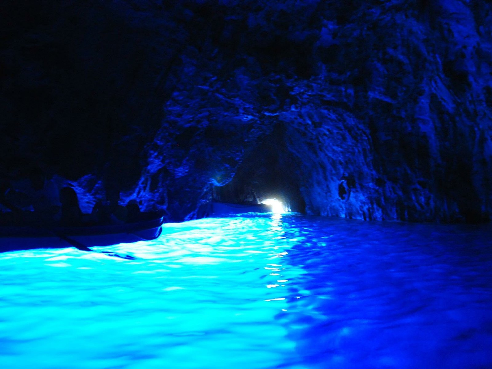
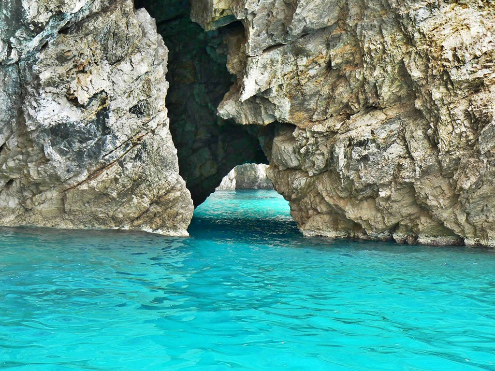
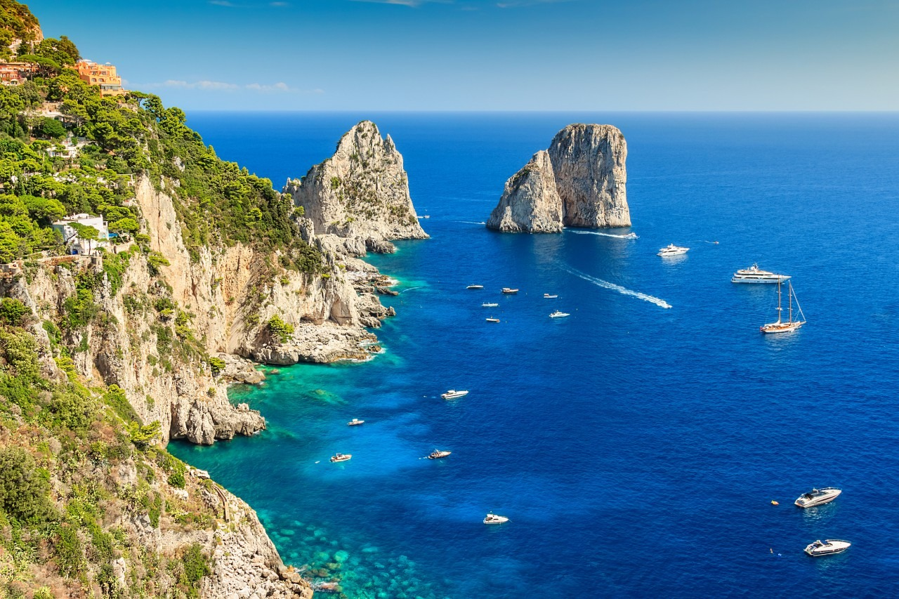

그 중에서도 로마 황제들이 아꼈던 카프리 섬을 제일 추천합니다.
소렌토, 포지타노, 아말피 등 지역에서 페리를 타고 가야 해서 교통편이 불편하지만 그래도 추천합니다.
그 유명한 푸른 동굴(Blue Grotto)입니다. 날씨와 파도가 허락하지 않아 저는 못 갔습니다.

페리를 타고 섬 주변을 한 바퀴 도는 투어에서 Green Grotto를 만났습니다.

섬 주변을 도는 페리 투어에서 Faraglioni 바위도 인기있습니다.
아우구스투스의 정원은 정원 내부도 볼만하지만 정원에서 내려다보는 바다 절경이 환상적입니다.

카프리 섬에는 예쁜 건물, 예쁜 꽃이 많습니다. 부자들의 별장이 많고 고급스러운 인테리어의 매장이 많아 건물 구경하는 재미도 있습니다.
그래서 카프리는 자연 경관과 건물 모두 훌륭한 섬입니다. 왜 로마 황제들이 카프리 섬을 사랑했는지 알 것 같습니다.